huba buba zar nije receno da je bitno da se samo pojavi na fizickoj vjezbi
pošaljem kod koji su dali kad završim s labosom, code blockovi su zločesti i ne slušaju me
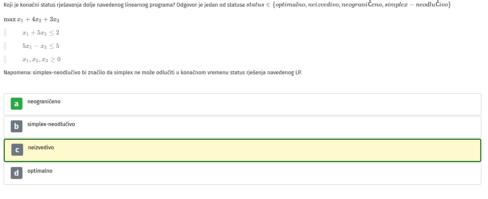
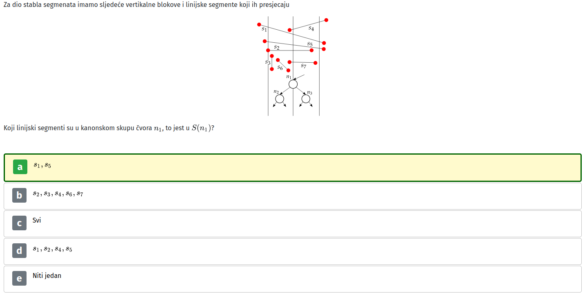
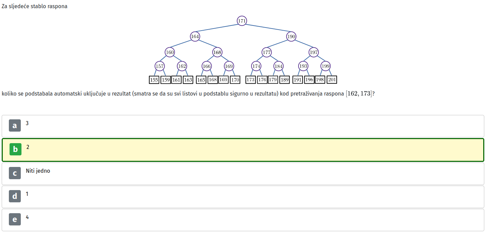
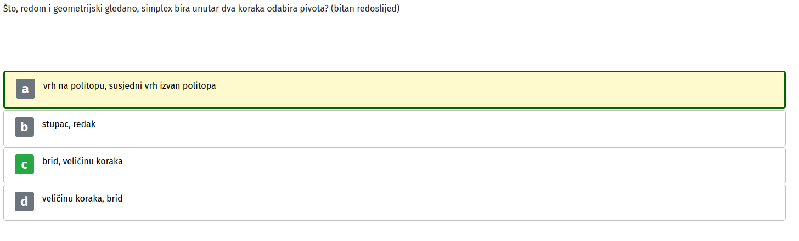
0.5/4 not too bad
iNut not great not terrible
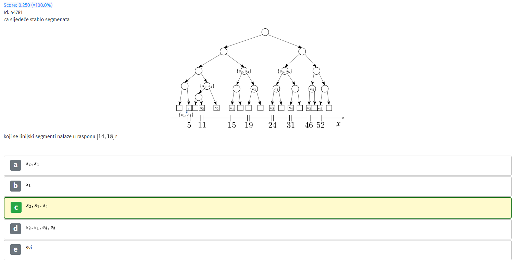 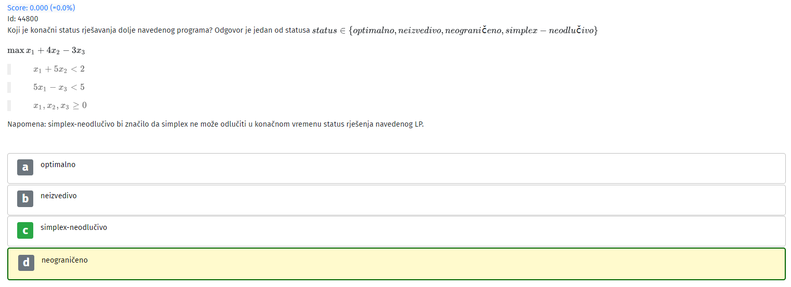 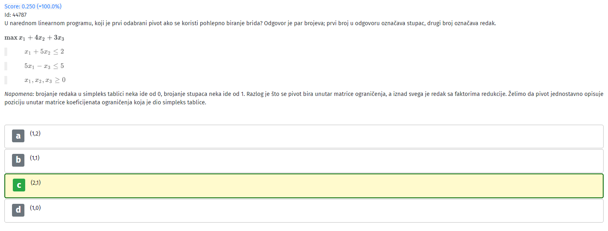
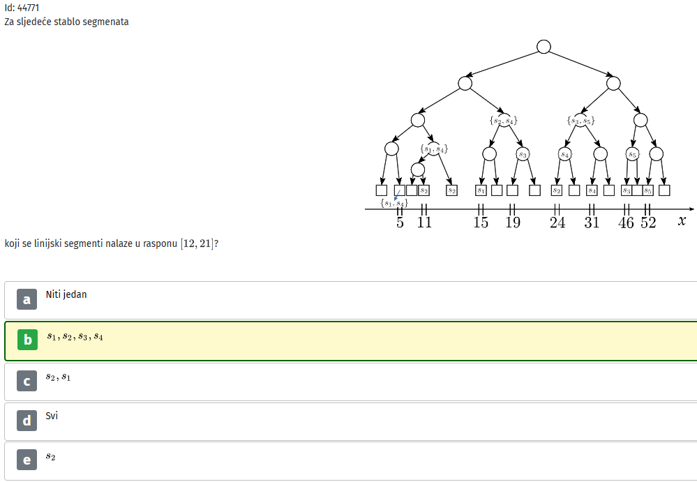 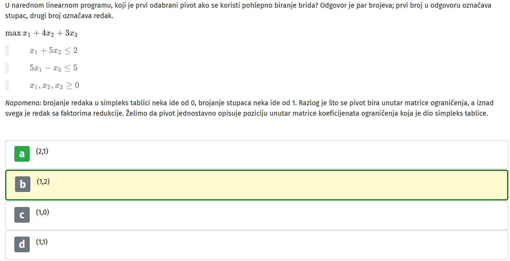 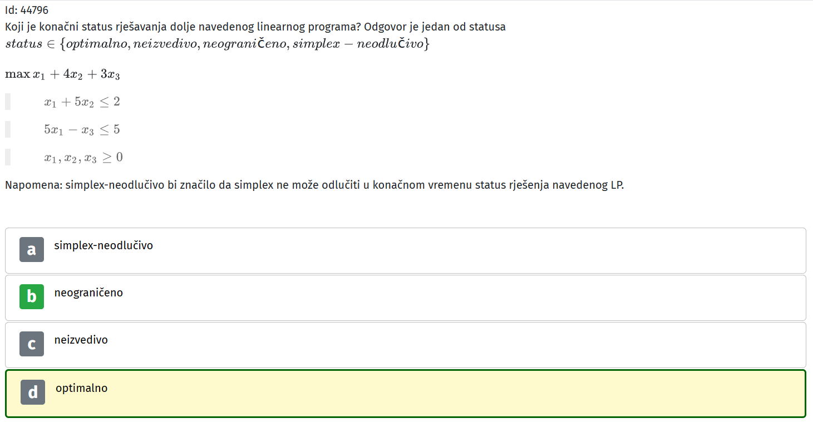 jebo ga (stupac, redak) indeksiranje, pripazite na to, cak su i napomenuli haha
Dr_Flare zna li netko pojasniti ovaj treći, tj. zašto bi status rješenja bio optimalan, neograničen itd.?
Dr_Flare Evo pastebin kostura koda koji se samo treba dopuniti:
A ovdje su im onih par primjera koji bi trebali raditi sa zavrsenim kodom:
Dr_Flare U danim ispisima… Kako je -2.666 maksimum, kad je to zapravo minumum.
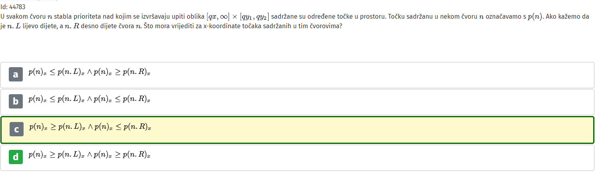 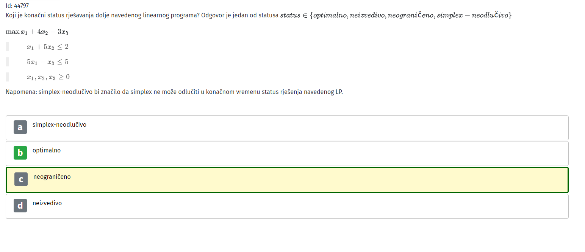
Ako mi edgar pise jos 28 minuta, jel to okej ili da zavrsim za 90min?
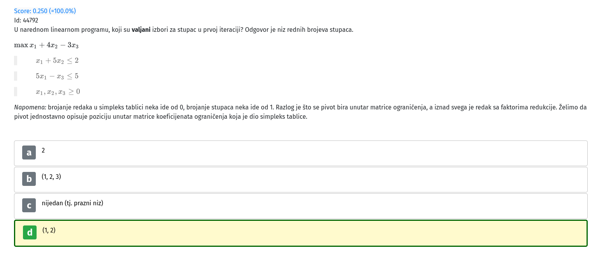 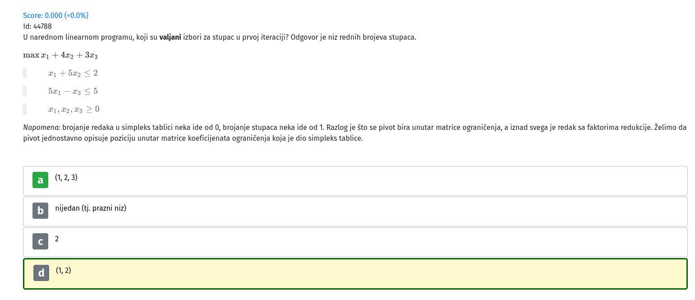 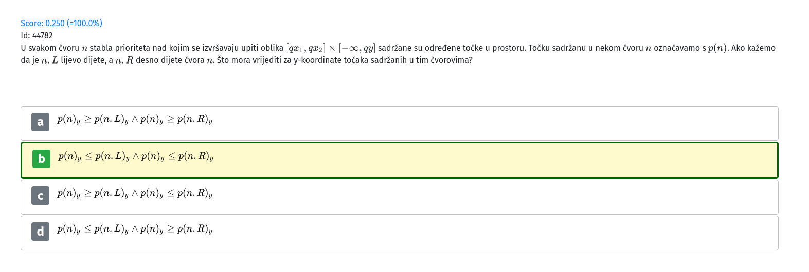
def readSolution za obj returnate 0 i dobijete 0.75
Jokke stavis obj = np.float32(0.0)?
Jokke na što se labosi svode hahahah
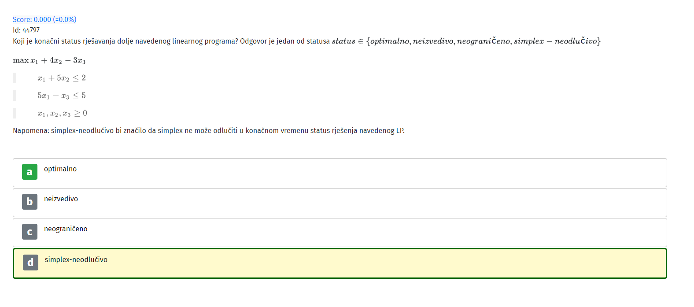 Msm da ovo jos nije bilo
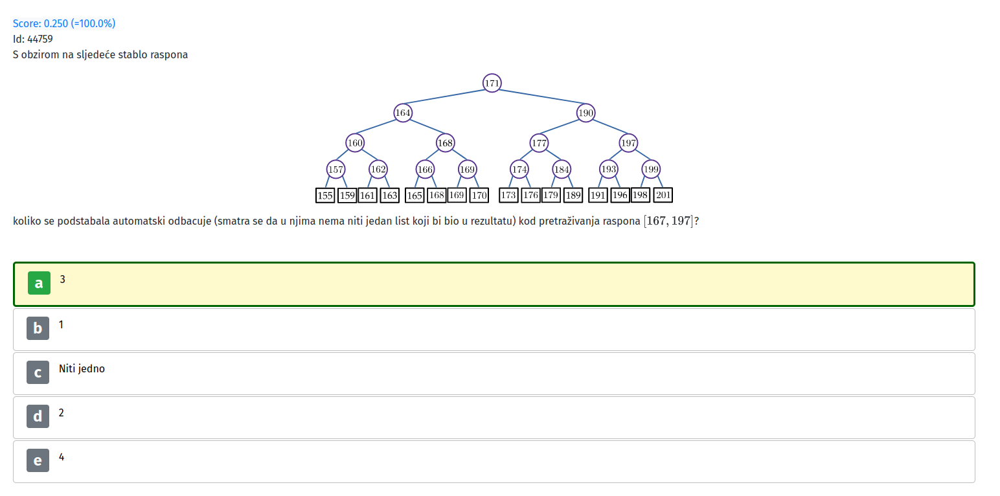
sto je basis?
reygrep Vektor koji sadrži pozicije linearno nezavisnih stupaca u tableau (valjda, tak sam ja skuzio)
netbitan Ne, u returnu sam obj zamijenio sa 0 ali moguce da su pripremili razlicite testove za razlicite termine
[obrisani korisnik] i ovo vezano uz LP sto su nam dali je toliko necitko da se moze rec da ni toga nema 😆
Jokke iz opisa zadatka, neki primjeri su random generirani 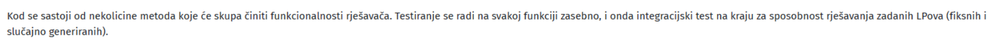
Ovo pogledate i na konju ste
gladiator di si bio prije 2h
Kikyy99 imas gore
gladiator video u kojem napravis samo prvi korak i imas redak/stupac koji je odgovor, samo zamijeni prvi i zadnji redak (x,y,u,w,p sa brojevima)